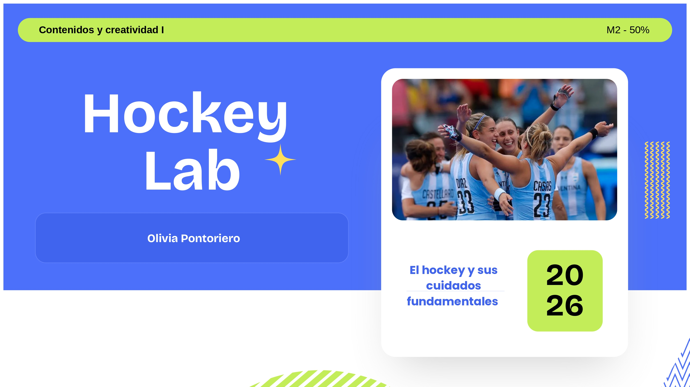
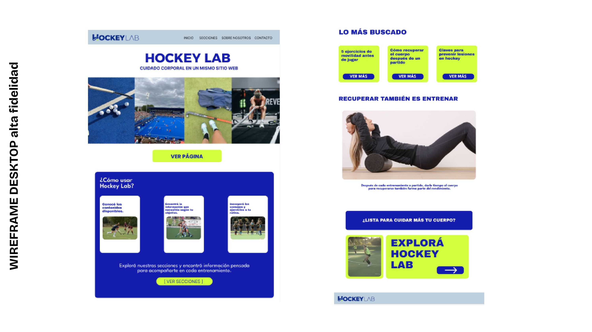

PORTFOLIO PERSONAL · 2026
Hola, soy
Olivia Pontoriero.
Estudiante de Comunicación Digital
Soy estudiante de la Universidad de Palermo. Me interesa el diseño, la comunicación y la creación de contenido digital.
Sobre mí
Actualmente estoy cursando la Licenciatura en
Comunicación Digital. Durante la carrera fui
descubriendo mi interés por el diseño, la creatividad
y el desarrollo de proyectos digitales.
Me gusta aprender cosas nuevas, trabajar en equipo
y encontrar distintas formas de comunicar ideas.
Estoy buscando mi primera experiencia laboral
para seguir creciendo y poner en práctica lo aprendido.

TRABAJO ACADÉMICO · 2026
Hockey Lab
Desarrollo de un sitio web informativo sobre hockey y bienestar deportivo. El proyecto reúne contenidos sobre movilidad, prevención de lesiones, recuperación y cuidado del cuerpo.
VER PROYECTO →Galería de imágenes



